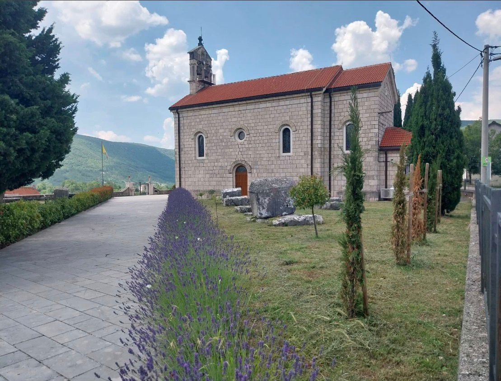
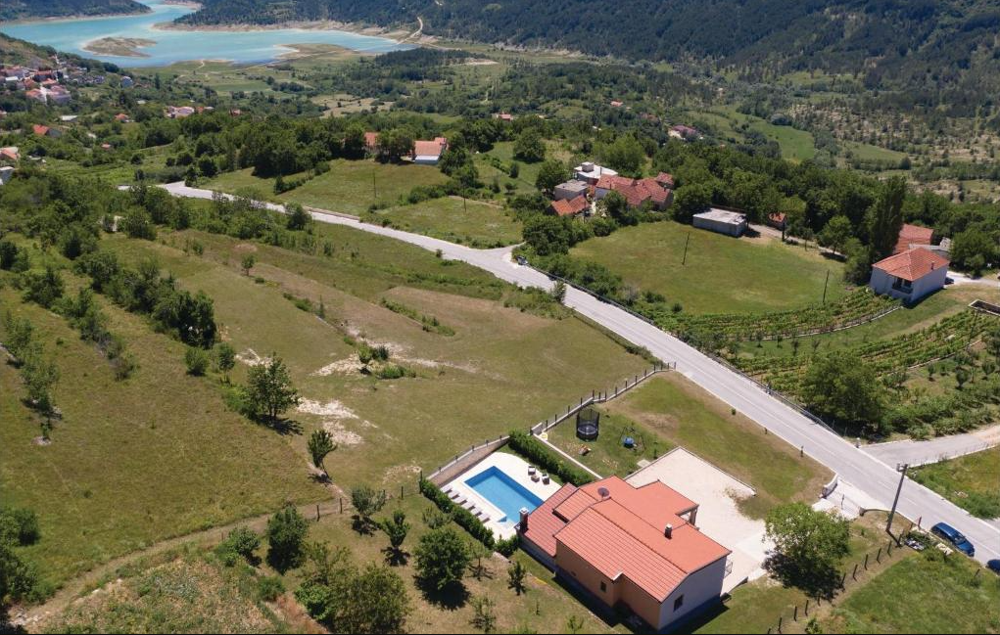
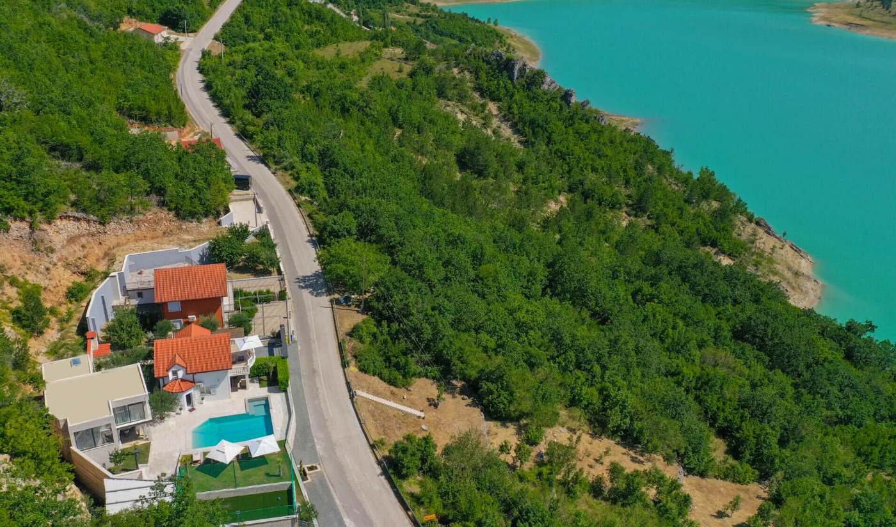
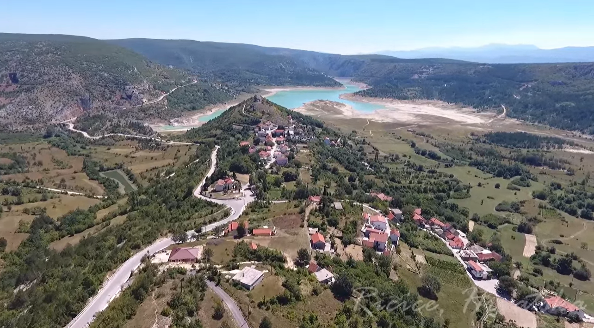

The Origin of the Tandara Surname
Introduction
The surname Tandara belongs to the group of old family names originating from the Imotski region, whose development can be traced back to the first half of the eighteenth century. Although today it is found throughout Croatia and among emigrant communities in several European and overseas countries, its roots are firmly connected with the village of Ričice, near Imotski.
The history of the surname cannot be viewed separately from the history of the region in which it developed. Understanding its origin therefore requires an overview of the political, administrative and social changes that transformed the Imotski frontier following the end of Ottoman rule and the establishment of Venetian administration in the early eighteenth century.




The Imotski Region at a Turning Point
At the beginning of the eighteenth century the Imotski region experienced one of the most significant periods in its history. After centuries of Ottoman administration, the area became part of the Republic of Venice in 1717. The new authorities introduced systematic land surveys, cadastral registration and regular parish records.
These reforms represented much more than administrative changes. They also played a decisive role in the formation and standardisation of hereditary family surnames. Many families received the permanent form of their surname during this period.
Family Names under Ottoman Administration
During Ottoman rule the population was not recorded in the manner familiar today. Tax registers usually listed only:
- heads of households,
- personal names,
- occasional nicknames.
Hereditary surnames were neither compulsory nor considered an important element of administration. As a result, the same family may appear under different designations in different historical records, making modern genealogical research considerably more challenging.
The First Reliable Record of the Family
The earliest document that can be reliably connected with today's surname dates from 1725. It records Ivan Tandarić, who was granted arable land in the village of Ričice.
This document is of exceptional historical importance because it represents the first firmly documented evidence of the family from which the present-day Tandara lineage developed.
What Does the Distribution of the Land Reveal?
An interesting feature of the 1725 land grant is that the plots assigned to Ivan Tandarić were scattered across several locations rather than forming a single continuous estate.
Such a pattern was typical of newly settled families. Older local lineages generally possessed larger and more consolidated properties, whereas newcomers received the remaining available plots.
For this reason, many researchers believe that the Tandarić family settled in Ričice only shortly before 1725.
From Tandarić to Tandara
The name Tandarić is a patronymic surname derived from the name of an ancestor.
Following the establishment of Venetian administration, family names gradually became standardized. Parish registers and cadastral records increasingly adopted the shorter form Tandara, which eventually became the dominant form during the second half of the eighteenth century.
The earliest unquestionable record of the standardized surname Tandara dates from 1762, when it appears in the parish registers.
A Possible Earlier Connection with Cista
One of the more intriguing historical clues leads to the nearby settlement of Cista, where the surname Tandar is recorded as early as 1697.
Although no document has yet established a direct genealogical connection between this record and the later family in Ričice, several circumstances suggest a possible relationship:
- geographical proximity,
- chronological continuity,
- the exceptional rarity of the surname.
At present this remains a historical hypothesis that deserves further archival research.
The Surname as Part of Local History
By the end of the eighteenth century the surname Tandara had become firmly established in Ričice.
Later cartographic sources indicate that the name Tandara also became the designation of a part of the village. Such occurrences were relatively uncommon and generally associated with families that had played an important role in the development of the local community over several generations.
Conclusion
Historical sources allow the development of the Tandara surname to be traced with considerable reliability from the first half of the eighteenth century onward. The first documented record from 1725, the gradual transition from the patronymic form Tandarić to Tandara, and the final standardization of the surname during Venetian administration represent the key stages in its historical development.
Although earlier references, such as the appearance of the surname Tandar in Cista in 1697, may indicate even deeper origins, these remain the subject of ongoing historical and genealogical research.
Today the surname Tandara forms part of the historical and cultural heritage of the Imotski region and stands as a testimony to the development of a family whose documented history extends across nearly three centuries.